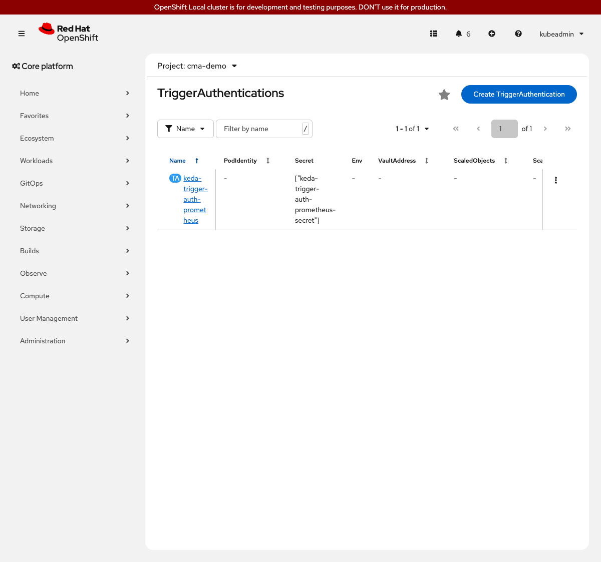

Custom Metrics Autoscaler on OpenShift Local
This step replaces the CPU trigger from step 02 with a Prometheus trigger that queries CPU usage directly from thanos-querier using cAdvisor metrics already available in the cluster monitoring stack. No additional exporters or ServiceMonitors are required.
Prerequisites
-
Step 02 reset:
myboot-cpu-scalerScaledObject deleted -
Cluster monitoring and user workload monitoring enabled (step 3 of setup)
-
ocCLI authenticated as cluster-admin
How It Works
Thanos-querier is the OpenShift cluster monitoring component that aggregates metrics from both the platform Prometheus and the user workload Prometheus. KEDA queries thanos-querier on its tenancy port (9092) using a PromQL expression and a bearer token tied to a ServiceAccount. The tenancy port enforces namespace isolation: it checks whether the bearer token’s ServiceAccount can get pods in the target namespace before allowing the query. This means the thanos-metrics-reader Role lives in cma-demo (not openshift-monitoring) and grants only pod-read and metrics-server access to that namespace - no cluster-wide metric read.
cAdvisor already tracks CPU time for every container in the cluster and exposes it as container_cpu_usage_seconds_total. No ServiceMonitor or application changes are needed. The PromQL query computes a 2-minute rate and multiplies by 1000 to express the result in millicores. KEDA adds a replica whenever the total CPU usage across all myboot pods exceeds 50 millicores.
OpenShift CRC scrapes cAdvisor every 60 seconds. The Prometheus rate() function requires at least two data points within the window to return a value. A [1m] window contains only one point at most and returns empty, which KEDA treats as 0 (no scale-up). A [2m] window reliably captures two scrape points and is the minimum window for CRC.
|
myboot is a Spring Boot 1.5 application that does not expose a Prometheus metrics endpoint. Using cAdvisor CPU metrics lets the workshop demonstrate the full authentication and PromQL path without requiring a custom exporter.
|
Steps to Apply
1. Create the ServiceAccount and grant monitoring access
What: Create a ServiceAccount in cma-demo, create a thanos-metrics-reader Role in cma-demo, and bind the ServiceAccount to it via a RoleBinding.
Why: Thanos-querier’s tenancy port (9092) enforces namespace isolation by verifying the bearer token can get pods in the target namespace. Placing the Role in cma-demo means the ServiceAccount has no access to metrics outside its own namespace - least-privilege compared to a Role in openshift-monitoring or a ClusterRoleBinding.
oc apply -f 03-prometheus-trigger/serviceaccount.yaml --context crc
oc apply -f 03-prometheus-trigger/role.yaml --context crc
oc apply -f 03-prometheus-trigger/rolebinding.yaml --context crcserviceaccount/keda-trigger-sa created
role.rbac.authorization.k8s.io/thanos-metrics-reader created
rolebinding.rbac.authorization.k8s.io/keda-trigger-sa-thanos-metrics-reader createdoc get rolebinding keda-trigger-sa-thanos-metrics-reader -n cma-demo --context crcNAME ROLE AGE
keda-trigger-sa-thanos-metrics-reader Role/thanos-metrics-reader 10s2. Grant keda-operator token permissions and create the TriggerAuthentication
What: Grant the keda-operator ServiceAccount permission to request bound tokens for keda-trigger-sa, then create the TriggerAuthentication that uses boundServiceAccountToken.
Why: With boundServiceAccountToken, KEDA requests a fresh, short-lived projected token directly from the Kubernetes TokenRequest API on each metric poll. No manually generated token or Secret is needed. The keda-operator SA needs create on serviceaccounts/token in this namespace to make that API call.
oc apply -f 03-prometheus-trigger/keda-token-role.yaml --context crc
oc apply -f 03-prometheus-trigger/triggerauth.yaml --context crcrole.rbac.authorization.k8s.io/keda-operator-token-creator created
rolebinding.rbac.authorization.k8s.io/keda-operator-token-creator created
triggerauthentication.keda.sh/keda-trigger-auth-prometheus createdoc get triggerauthentication keda-trigger-auth-prometheus -n cma-demo --context crc -o yamlapiVersion: keda.sh/v1alpha1
kind: TriggerAuthentication
metadata:
name: keda-trigger-auth-prometheus
namespace: cma-demo
spec:
boundServiceAccountToken:
- audiences:
- https://kubernetes.default.svc
parameter: bearerToken
serviceAccountName: keda-trigger-sa
boundServiceAccountToken requires the keda-operator ServiceAccount in openshift-keda to have create permission on serviceaccounts/token in the target namespace. Without it, KEDA logs bearer token=<empty> is required when bearer auth is enabled on every metric poll and no scaling occurs. The keda-token-role.yaml file applied above grants this permission.
|
3. Verify the cAdvisor metric is available in thanos-querier
What: Run a one-shot pod to query thanos-querier and confirm the CPU metric for myboot returns data.
Why: Confirming the metric before applying the ScaledObject makes it easier to tell whether a later problem is in the query or in the KEDA configuration.
CHECK_TOKEN=$(oc create token keda-trigger-sa \
-n cma-demo --context crc)
oc run metric-check --rm -i --restart=Never \
--image=registry.access.redhat.com/ubi9/ubi-minimal:latest \
-n cma-demo --context crc \
-- curl -sk \
-H "Authorization: Bearer $CHECK_TOKEN" \
'https://thanos-querier.openshift-monitoring.svc.cluster.local:9092/api/v1/query?query=sum(rate(container_cpu_usage_seconds_total%7Bnamespace%3D%22cma-demo%22%2Ccontainer%3D%22myboot%22%7D%5B2m%5D))*1000&namespace=cma-demo'
CHECK_TOKEN is a short-lived token generated only to run this verification curl. KEDA itself requests fresh tokens automatically via boundServiceAccountToken and never needs this variable.
|
{"status":"success","data":{"resultType":"vector","result":[{"metric":{},"value":[1728397200,"7.4"]}]}}A numeric value such as 7.4 (millicores at idle) confirms the metric path is working. An empty result: [] means the pods are too new - wait 2 minutes for cAdvisor to accumulate a full rate window and retry.
4. Create the Prometheus-based ScaledObject
What: Delete the CPU ScaledObject if still present, then apply the Prometheus-based one.
Why: Two ScaledObject resources targeting the same Deployment each try to manage their own HPA, which causes conflicts. Delete the CPU scaler before creating the Prometheus scaler.
oc delete scaledobject myboot-cpu-scaler -n cma-demo --ignore-not-found --context crc
oc apply -f 03-prometheus-trigger/scaledobject.yaml --context crcscaledobject.keda.sh/myboot-cpu-scaler deleted
scaledobject.keda.sh/myboot-prometheus-scaler createdoc get scaledobject myboot-prometheus-scaler -n cma-demo --context crcNAME SCALETARGETKIND SCALETARGETNAME MIN MAX TRIGGERS READY ACTIVE
myboot-prometheus-scaler apps/v1.Deployment myboot 1 5 prometheus True FalseIf READY shows False, check the ScaledObject conditions for error messages:
oc describe scaledobject myboot-prometheus-scaler -n cma-demo --context crc | grep -A 10 Conditions5. Generate CPU load and observe scaling
~5 minutes total (Job runs 120 s; metric crosses threshold ~82 s in; pods ready ~144 s; scale-down completes ~144 s after load stops as the 2-minute rate window drains and the 60-second stabilization window elapses)
What: Run the load-generating Job to push total CPU usage above the 50-millicore threshold.
Why: The PromQL query uses a 2-minute rate window. Once the window fills with high-CPU samples (~60-90 s into the job), KEDA fires within the next polling interval. Scale-down begins once the rate window drains back below threshold (~120 s after load stops), then the 60-second stabilization window elapses.
oc apply -f 02-cpu-trigger/load-job.yaml --context crcWatch scaling events in a second terminal:
watch oc get pods -n cma-demo -l app=myboot --context crcoc get scaledobject myboot-prometheus-scaler -n cma-demo --context crcNAME ... READY ACTIVE FALLBACK AGE
myboot-prometheus-scaler ... True True False 3m
What This Solves (Compared to Step 02)
| Problem from Step 02 | How This Step Solves It |
|---|---|
Scaling is driven by a built-in CPU trigger that only reads Kubernetes metrics |
The Prometheus trigger can evaluate any PromQL expression - CPU, memory, queue depth, or custom business metrics |
No authentication to external metric sources |
The TriggerAuthentication pattern works for any token-protected endpoint, not just thanos-querier |
What This Does NOT Solve (Yet)
| Remaining Problem | Addressed In |
|---|---|
Scaling is reactive: replicas only change after load arrives |
Step 04 - Cron Trigger adds pre-scheduled scaling for predictable load patterns |
No way to pause autoscaling for maintenance |
Step 04 - Cron Trigger covers the pause annotation |
Alternatives Considered
| Approach | Notes |
|---|---|
Deploy a standalone Prometheus instance |
Works but requires managing a separate installation. Querying thanos-querier reuses the monitoring stack CRC already runs. |
Use |
A ServiceAccount token generated with |
Use thanos-querier port 9091 with |
Port 9091 authenticates via a Role that grants |
Use a ClusterRoleBinding with |
Grants the SA cluster-wide monitoring-view access across all namespaces. The namespaced |
Use |
CRC scrapes cAdvisor every 60 seconds. Prometheus |
Use |
Mounting the CA cert is the production-safe approach. The workshop uses |
Reset
Delete resources in reverse order. All resources from this step live in cma-demo.
oc delete scaledobject myboot-prometheus-scaler -n cma-demo --ignore-not-found --context crc
oc delete triggerauthentication keda-trigger-auth-prometheus -n cma-demo --ignore-not-found --context crc
oc delete rolebinding keda-operator-token-creator -n cma-demo --ignore-not-found --context crc
oc delete role keda-operator-token-creator -n cma-demo --ignore-not-found --context crc
oc delete rolebinding keda-trigger-sa-thanos-metrics-reader -n cma-demo --ignore-not-found --context crc
oc delete role thanos-metrics-reader -n cma-demo --ignore-not-found --context crc
oc delete serviceaccount keda-trigger-sa -n cma-demo --ignore-not-found --context crc
oc delete job myboot-load -n cma-demo --ignore-not-found --context crc
oc wait --for=condition=available deployment/myboot -n cma-demo \
--timeout=120s --context crc